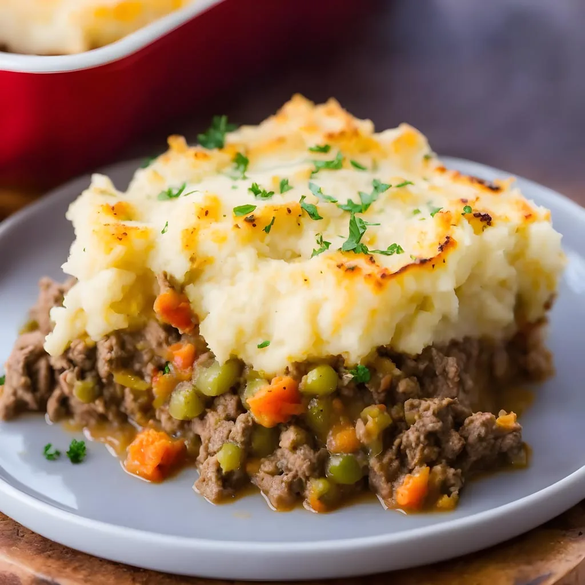

St. Paddy's Irish Beef Dinner

Description
This recipe is a very special one to me.
It is a recipe that my wife and i picked out of one of our cook books and decided to throw together one evening.
We had never made this before but when we were both in the kitchen preparing it it was as if we were experts making it for the 100th time.
After making it we had both decided that it was a masterpiece and we were so satisfied with our teamwork on this dish.
Ingredients
- 2 Medium yukon gold potatoes
- 2 Small parsnips
- 3/4lb lean ground beef
- 1 Medium onion, chopped
- 2 Cups finely shredded cabbage
- 2 Medium carrots, halved and sliced
- 1 tsp dried thyme
- 1 tsp Worcestershire sauce
- 1 Tbsp all-purpose flour
- 1/4 Cup tomato paste
- 1 Can reduced sodium chicken or beef broth
- 1/2 Cup frozen peas (optional)
- 3/4 Tsp salt
- 1/2 Tsp pepper
- 1/4 Cup 2% milk
- 1 Tbsp butter
Home